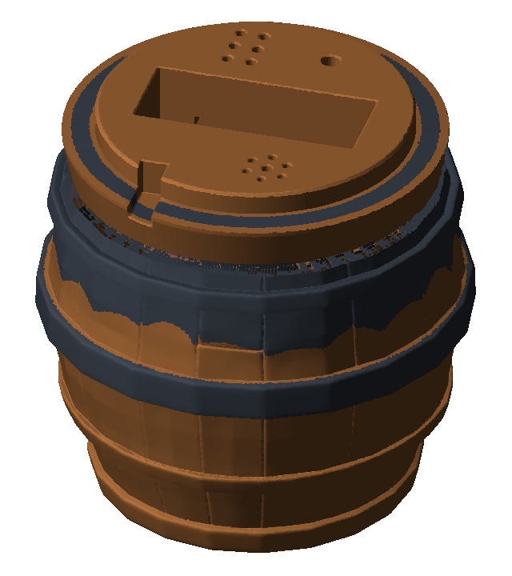

Monitoramento Organoléptico da Cava
Total: 8 Lotes
Preservados: 8
Atenção: 0
TEMPERATURA
--°C
Alvo: 12.0°C a 16.0°CHIGROMETRIA
--%
Alvo: 65% a 75%PENUMBRA
--%
Alvo: 0% a 15%APOGEU ENOLÓGICO
100%
Cava Preservada · LED Verde OKCarta de Presets Enológicos & Triggers de Conservação
Temperatura ideal de 12.0°C a 16.0°C para Tintos de Guarda em barricas.a
a
a
Protótipo do Barril Inteligente & Telinha Verde LCD 16x2 (66x26mm)

VINHERIA AGNELLO · CAVA DO SOMMELIER
APOGEU ENOLÓGICO: 100% [PRESERVADO]
Dashboard Analítico SCADA em Tempo Real
Telemetria contínua Wokwi HiveMQ (:1883) & Séries Temporais Plotly com Faixa Verde Ideal
Verde OK
Vermelho Alerta
Azul Remoto
TEMPERATURA & UMIDADE DA CAVA
PENUMBRA & RADIAÇÃO SOLAR (LDR)